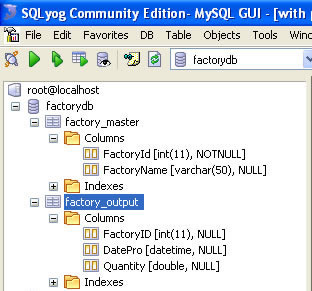

In this section, we'll show you how to use FusionCharts and Ruby to plot charts from data contained in a database. We'll create a pie chart to show "Factory Output Quantity by Factory" using:
- dataStr method first.
- Thereafter, we'll convert this chart to use dataUrl method.
- Next, we will create a multi-series line chart from database
For the sake of ease, we'll use the MySQL Database. You can, however, use any database with FusionCharts including SQLLite, MS SQL, Oracle, Access etc. Database configuration will be available here Download Package >> RoR >> config >> database.yml. In the production version, we have used database named as factorydb.
Before you go further with this page, we recommend you to please see the previous section "Basic Examples" as we start off from concepts explained in that page.
All code discussed here is present in
Controller : Download Package > Code > RoR > SampleApp > app > controllers > fusioncharts > db_example_controller.rb.
Rhtml : Download Package > Code > RoR > SampleApp > app > views > fusioncharts > db_example folder.
Database Structure
Let's quickly have a look at the database structure.
The database contains just 2 tables:
- factory_masters: To store the name and id of each factory
- factory_output_quantities: To store the number of units produced by each factory for a given date.
Note that the name of the table is pluralized, as per Ruby conventions. For demonstration, we've fed some sample data in the database.
Database Configuration
- All the database configuration is present in the file app > config > database.yml. Here we need to specify the database name, user name and password to access the database. We have used the MySQL database for our examples. We assume that you have created the database with the name factorydb, either by using the rake db:create utility or by using MySQL create database command.
- Once this is done, we need to create the required tables. The required sql script "create_tables.sql" is present in the Download Package > Code > RoR >db folder. You could run this script in your mysql and create the tables and insert the sample data. The other way of creating these tables, is to run rake db:migrate for the migration scripts "001_create_factory_masters.rb" and "002_create_factory_output_quantities.rb" present in the folder Download Package > Code > RoR >db > migrate. Note that these scripts will not create foreign key relationships. You would have to manually alter the table to create these relationships, if you think necessary. To insert the sample data please run the sql script "insert_sample_data.sql" present in the Download Package > Code > RoR >db folder.
Let's now shift our attention to the code that will interact with the database, fetch data and then render a chart.
Database Example Using dataStr method
Controller: Fusioncharts::DbExampleController
Action: basic_dbexample
class Fusioncharts::DbExampleController < ApplicationController
#This is the layout which all functions in this controller make use of.
layout "common"
#This action retrieves the Factory data
#which holds factory name and corresponding total output quantity.
#The view for this action basic_dbexample will use these values to construct the
#xml for this chart. To build the xml, the view takes help of the builder file (basic_factories_quantity.builder)
def basic_dbexample
response.content_type = Mime::HTML
#Get data from factory masters table
@factories = Fusioncharts::FactoryMaster.find(:all)
end
View:
<% @page_title="FusionCharts - Database Example" %>
<% @page_heading="FusionCharts Database Example Using dataXML method" %>
<% @page_subheading="Click on any pie slice to slice it out. Or, right click to enable rotation mode." %>
<%
#In this example, we show how to connect FusionCharts to a database.
#For the sake of ease, we've used a database which contains two tables,
#which are linked to each other.
# The xml is obtained as a string from builder template.
str_xml = render :file=>"fusioncharts/db_example/basic_factories_quantity",:locals=>{:factories => @factories}
#Create the chart - Pie 3D Chart with data from strXML
render_chart '/FusionCharts/Pie3D.swf', '', str_xml, 'FactorySum', 600, 300, false, false do-%>
<% end-%>
Now, here we need to understand some lines of code.
- The basic_dbexample action of the controller, first performs a find on FactoryMaster model, getting all the values.
- For each factory in the record set obtained in the previous step, we need the total output quantity for that factory. This is done in the FactoryMaster Model. Note that FactoryMaster and FactoryOutputQuantity are related to each other as shown:
#Model class to store data of factory id and name #As per Ruby On Rails conventions, we have the corresponding table #factory_masters in the database class Fusioncharts::FactoryMaster < ActiveRecord::Base has_many :factory_output_quantities, :order => 'date_pro asc' #Calculates the total output quantity by summing the quantity from factory_output_quantities def total_quantity self.factory_output_quantities.sum(:quantity) end end #Model class to store output data of factories #As per Ruby On Rails conventions, we have the corresponding table #factory_output_quantities in the database class Fusioncharts::FactoryOutputQuantity < ActiveRecord::Base belongs_to :factory_master end
Based on this relation, Ruby On Rails is able to get the data for FactoryOutputQuantity when a find is performed on FactoryMaster.
- The view basic_dbexample.html.erb passes the @factories present in the controller to the builder file "basic_factories_quantity", as local parameter. The xml obtained from the builder is assigned to str_xml variable.
- Finally, render_chart function is called by setting the str_xml as xml parameter.
Let us now take a look at the builder file.
Builder - basic_factories_quantity.builder
#Creates xml with values for Factory Output
#along with their names.
#It uses the factories parameter from locals hash.
#This data is used for building xml for chart with factory name and total output.
xml = Builder::XmlMarkup.new
xml.chart(:caption=>'Factory Output report', :subCaption=>'By Quantity', :pieSliceDepth=>'30',
:showBorder=>'1', :formatNumberScale=>'0', :numberSuffix=>'Units') do
factories.each do |factory|
xml.set(:label=>factory.name,:value=>factory.total_quantity)
end
end
The builder builds chart element with several attributes, then iterates through the factories (received via :locals from the view) to create the <set> element with value for label as factory name and value for value attribute as total factory output.
When you now run the code, you'll see a beautiful pie chart as under:
Converting the example to use dataURL method
Let's now convert this example to use dataURL method. In dataURL mode, you need the following:
- Chart Container View Page - The page which embeds the HTML code to render the chart. This page also tells the chart where to load the data from. We'll name this page as default.html.erb.
- Data Provider Builder Page - This builder provides the XML data to the chart. We'll name this page as pie_data.builder.
The pages in this example are contained in Download Package > Code > PHP > DB_dataURL folder.
The code for the Chart Container is as follows:
Controller: Fusioncharts::DbDataUrlController
Action: default
def default
@str_data_url = "/Fusioncharts/db_data_url/pie_data?animate=0"
#The common layout for this view
render(:layout => "layouts/common")
end
View:
<% @page_title="FusionCharts - dataURL and Database Example" %>
<% @page_heading="FusionCharts dataURL and Database" %>
<% @page_subheading="Click on any pie slice to slice it out.
Or, right click to enable rotation mode." %>
<%
#Create the chart - Pie 3D Chart with dataURL as @str_data_url.
render_chart '/FusionCharts/Pie3D.swf',@str_data_url,'','FactorySum', 600, 300, false, false do-%>
<% end -%>
In the above code, we have
- Created the dataURL string and store it in @str_data_url variable. We append a dummy property animate to show how to pass parameters to dataURL. After building the dataURL, we encode it using CGI.escape function defined in the action.
- We apply the common layout before rendering the view.
- Finally, in the view, we render the chart using render_chart method and setting dataURL as @str_data_url.
Creating the Data Provider builder template
pie_data action and the corresponding builder template have the following code:
Controller: Fusioncharts::DbDataUrlController
Action: pie_data
# Finds all factories
# Uses the Model FactoryMaster
# Content-type for its view is text/xml
def pie_data
response.content_type = Mime::XML
@animate_chart = params[:animate]
if @animate_chart.nil? or @animate_chart.empty?
@animate_chart = '1'
end
# Find all the factories
@factories = Fusioncharts::FactoryMaster.find(:all)
end
Builder:
#Creates xml with values for factories
#along with their names.
#The values required for building the xml is obtained
#from the corresponding controller action pie_data
#It accesses @factories from the controller.
#Here, this data is used for building xml for pie chart with factory name and total output.
xml = Builder::XmlMarkup.new(:indent=>0)
xml.chart(:caption=>'Factory Output report', :subCaption=>'By Quantity',
:pieSliceDepth=>'30', :showBorder=>'1',
:formatNumberScale=>'0', :numberSuffix=>' Units',
:animation=>@animate_chart) do
@factories.each do|factory|
xml.set(:label=>factory.name,:value=>factory.total_quantity)
end
endIn the action, we first set the content-type header as XML and then find all the factories present in factory_masters table.
In the builder, we construct the xml for the chart using the factories data (@factories) from the controller.
When you now view this page, you'll get a beautiful pie chart.
Create multi-series line chart
Let's now see how we can create a multi-series chart from database. This is no different from creating the Pie chart we saw above.
All you need to do is to build proper XML from the database that you query from your database. Multi-series charts have a different data format from the format of an XML for a single-series chart like pie.
Let us see how the code would look for this:
Controller: DbExampleController Action: multiseries #This action retrieves the factory data for all factories #The view for this action is multiseries.html.erb and it uses the builder file #msfactory_details.builder to build the xml for the chart. def multiseries response.content_type = Mime::HTML @chart_attributes={:caption=>'Factory Output report', :subCaption=>'By Quantity', :xAxisName=>'Factory',:yAxisName=>'Units', :rotateValues=>'1', :formatNumberScale=>'0', :animation=>'1' } #Get data from factory masters table @factories = Fusioncharts::FactoryMaster.find(:all,:include=>"factory_output_quantities") #selects the date of production in the ascending order @factory_dates_of_production = Fusioncharts::FactoryOutputQuantity.find (:all,:select=>"DISTINCT date_pro",:order=>"date_pro asc") end View: multiseries.html.erb <% @page_title=" FusionCharts Multiseries chart using data from database " %> <% @page_heading=" FusionCharts Multiseries chart using data from database " %> <% @page_subheading="Output of various factories." %> <p class='text'>This is very simple implementation of a multi-series chart using a simple database.</p> <% # The xml is obtained as a string from builder template. str_xml = render :file=>"fusioncharts/db_example/msfactory_details" ,:locals=>{:factories => @factories,:factory_dates_of_production=>@factory_dates_of_production} #Create the chart - Pie 3D Chart with data from strXML render_chart '/FusionCharts/MSLine.swf','', str_xml, 'FactorySum', 700, 400, false, false do-%> <% end-%> Builder: msfactory_details.builder #Creates xml with values for Factory Output #along with their names. #It uses the factories parameter from locals hash. #This data is used for building xml for multi-series chart #with factory name and output for each factory. #For a multi-series chart, dataset tag with seriesName attribute has to be present. #Within the dataset, add the set tag with value attribute. xml = Builder::XmlMarkup.new xml.chart(@chart_attributes) do xml.categories do factory_dates_of_production.each do |factory_datepro| xml.category(:label=>factory_datepro.formatted_full_date) end end factories.each do |factory| # whenever the factory name changes, start a new dataset element xml.dataset(:seriesName=>factory.name) do factory.factory_output_quantities.each do |output| xml.set(:value=>output.quantity) end end end end
In the action multiseres, we find the list of factories along with their output details (highlighted in the above code) and the dates of production of each factory. In the view, we render the chart providing the dataStr ( third parameter ) as the xml obtained from the builder file.
In the builder file, we construct the xml for the chart by using the locals parameter passed to it. The dates of production of each factory is used as category labels, factory name is used as seriesName and each factory output quantity is the value for each set element.
Finally, the chart would look as shown in the image below: